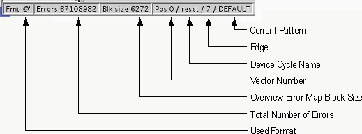

Status Bar
The status bar is at the bottom of the error map tool window. It shows the data as shown in the figure below:

Note Current pattern, edge, device cycle name and vector number are only
available in the cycles view and edges view. Used format shows the format currently used. If no
format has been selected, the default "@" will be displayed.